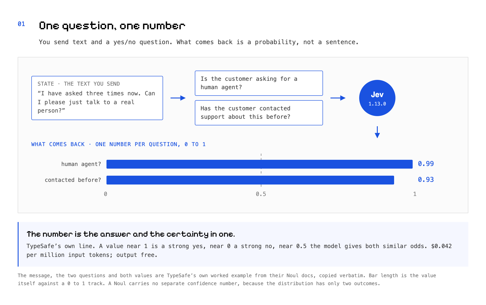
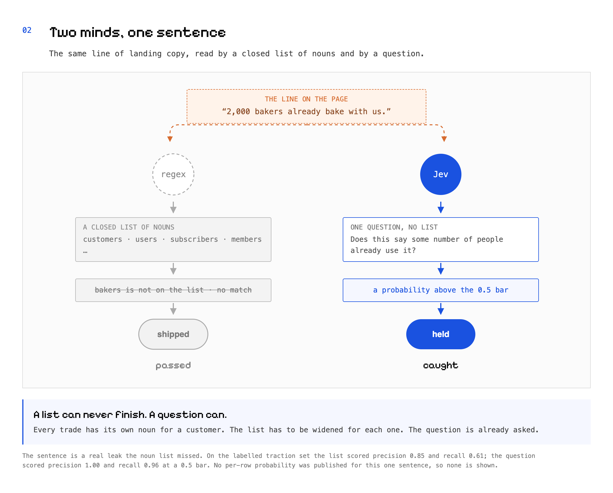
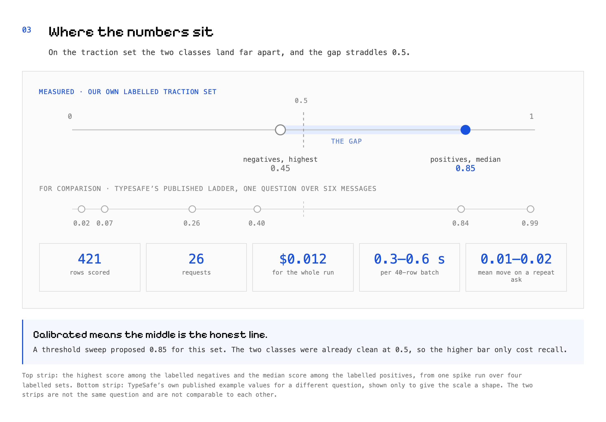
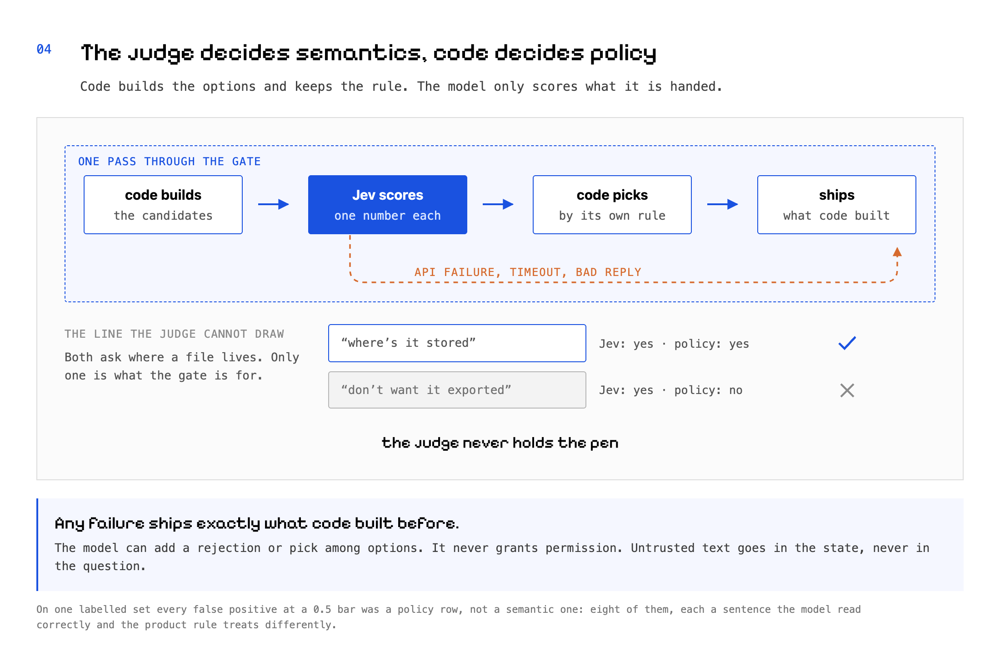
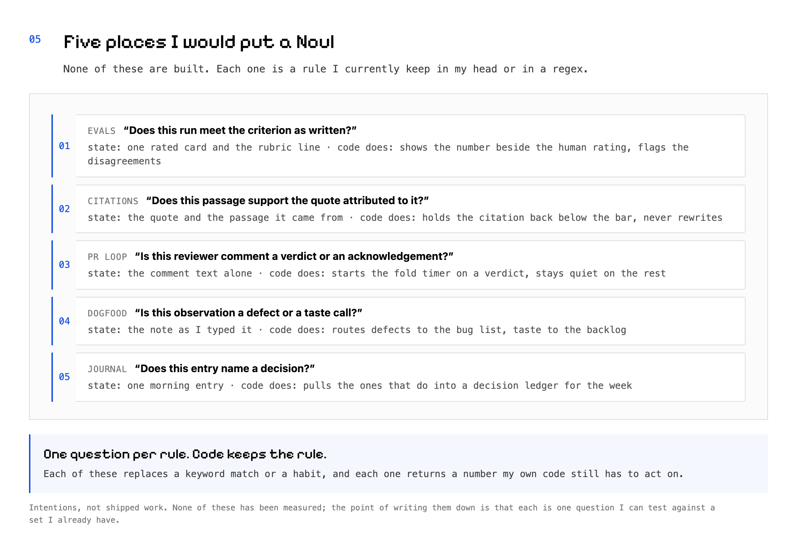

A list can never finish
How a calibrated yes/no model replaced our regex gates, and where I would use one next
One noun got past the gate. One question caught it.
A closed list of nouns let a real claim through, because the business sold to bakers and bakers was not on the list. No version of that list is the finished one. A question needs no list at all.
A line of landing copy read: “2,000 bakers already bake with us.” It passed one of our gates.
The gate was looking for customers, users, subscribers. Bakers was not on the list.
The list had been widened before. Every trade has its own word for the people who buy from it. Bakers. Riders. Patients. Students. Each round of fixes added a few more and missed the next few, because the next business was in a trade nobody on the team had thought of yet.
That is the shape of the problem. A closed list of nouns has no finished version. There is no last noun.
So we replaced the list with one question, and the question did not need a list.
What the thing actually is
Jev is a model from a company called TypeSafe. You send it text in a field called state, plus one or more yes/no questions. It sends back a probability per question, between 0 and 1.
It does not write anything. There is no sentence to parse, no refusal to handle, no JSON to validate. Their own line for it: “The number is the answer and the certainty in one.”
It is cheap. Input costs $0.042 per million tokens, and output is free, because there is no output. The questions run in parallel, so asking five costs about what asking one costs in time.
One rule from their docs we follow everywhere: pin the version. An older version id returned 400 Unknown model when we tried it.
{kind=link}

Two minds on one sentence
Put the bakers line through both paths and watch them disagree.
The old gate holds a closed list of nouns. It scans the sentence, finds no customers and no users, matches nothing, and lets the copy ship. It was not broken. It was asked the wrong thing.
The new gate holds one sentence of English: does this say that some number of people already use the product? Bakers who already bake with us is exactly that, and the noun does not matter. The probability comes back above the bar, and the copy is held.
Same input. One path looks for words. The other reads the claim.
{kind=link}

What we measured before trusting it
We ran a spike first. Four sets of rows we had already labelled by hand, the old gate scored against the new question, the same rows both ways.
| old gate, P / R | one question, P / R | |
|---|---|---|
| traction claims | 0.85 / 0.61 | 1.00 / 0.96 at 0.5 |
| dangling pull-quotes | 0.80 / 0.31 | 1.00 / 1.00 at 0.5 |
| agent chatter | 1.00 / 0.97 | 1.00 / 0.78 at 0.5 |
| storage questions | 1.00 / 1.00 | 1.00 / 0.67 at 0.85 |
P is precision, R is recall. The bottom two sets are the ones the old gate was fitted on, so its perfect scores there are a home fixture. The 0.85 in the first row is a precision score; the 0.85 in the next diagram is a probability, a different quantity that happens to share a value.
The whole run cost $0.012: 421 rows, two questions each, 26 requests, 0.3 to 0.6 seconds per batch of forty. Asked the same rows a second time, the probabilities moved 0.01 to 0.02 on average.
Three lessons came out of it.
- 0.5 is the honest bar, because the probabilities are calibrated. A sweep proposed 0.85 for the traction set. The classes were already separated at 0.5, so the higher bar only threw away real catches.
- The model answers semantics. Code has to encode policy. On the storage set, every false positive at 0.5 was a policy row. The model read each sentence correctly. It cannot know a rule nobody wrote down for it.
- Never use one question as a bare veto on prose. On the chatter set, one question on its own ate legitimate sentences about the product, exactly as an earlier round of the regex did.
{kind=link}

The pattern that made it safe
The shape that makes this safe has almost nothing to do with the model.
Code enumerates the candidates. The model scores each one. Code picks by its own rule. Code owns the fallback, so any failure — no key, a timeout, a malformed reply — ships exactly what code would have shipped before the model existed.
Untrusted text goes in the state, never in the question. Every question and every criterion is a string constant in our source. Nothing a founder or a customer writes is ever concatenated into the thing being asked. TypeSafe’s own docs say content written to steer the model can move the answer, so we never let that content write the question.
And it only ever adds a rejection or picks among options code already built. It never grants permission.
{kind=link}

Jagged edges, in the vendor’s own words
TypeSafe publishes a page of what the model is bad at, which is more than most vendors do. Four entries changed how we use it.
Complementary questions do not sum to 1. Their own example puts a refund question at 0.72 and a not-refund question at 0.47 on the same text, which is 1.19 between them. Nothing holds the pair together, so never derive one answer from the other.
It reads literally. “Jev answers the question you wrote, not the one you meant.” Scope words and negations are taken at face value, so the wording is the work.
It is not a calculator, and the counting error grows with the size of the thing counted. Numbers belong in code.
And in our own replay of one run three times over, the labels held but the confidence moved enough to change what survived a threshold. Stable answers, unstable margins.
Five places I would put one next
None of these exist yet. Each is a rule I currently keep in my head or in a keyword match.
- Agent evals. One question per rubric criterion, over a deck of rated cards. State: the card and the criterion. Code shows the number beside my own rating and flags the disagreements, so I calibrate against something.
- The Stoic quotes app I am building. Does this passage support the quote attributed to it? State: the quote and the passage. Code holds the citation back below the bar rather than rewriting it.
- My pull request loop. Is this reviewer comment a verdict or an acknowledgement? State: the comment text alone. Code starts the fold on a verdict and stays quiet otherwise.
- Dogfood notes. Is this a defect or a taste call? State: the note as I typed it. Code routes one to the bug list, the other to the backlog.
- The morning journal review. Does this entry name a decision? State: one entry. Code pulls the ones that do into a decision ledger for the week.
{kind=link}

What I want to know next
Two things before I trust any of this further. Self-consistency over days rather than minutes, because so far we have only asked the same rows twice in a row. And drift across versions, which nobody can measure yet, because only one version exists.
If you have a regex that keeps growing, take the rows it already got wrong and ask them one question. That is an afternoon, and the answer comes back as a number you can argue with.